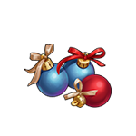

Получено: файл; исходный URL. Исходный файл без перекодирования с альтернативного хоста; совпадение байтов с оригинальной ссылкой не проверено. Страница: источник.
Новогодние шары — Морозная равнина
историческая браузерная социальная игра; платформа и редакция уточняются- Тип
- Материал
- Покупка
- нет данных
- Продажа
- нет данных
- Как получить
- нет данных
- Применение
- нет данных
- Особенности
- нет данных
- Версия и дата
- историческая браузерная социальная игра; платформа и редакция уточняются
Данные по источнику · браузерная игра; платформа не уточнена · декабрь 2014 — дата публикации; дата поздних правок не установлена
Предварительно: Фанатский источник; возможны ошибки, разночтения и изменения редакций.. Требуется сверка.
- Получение
- На Морозной равнине в мешках Санты и при сносе заснеженных ресурсов. Статья указывает покупку за 3 зомбакса и продажу за 1500 монет.
- Использование
- Для строительства двух версий Новогодней ёлки 2014–2015. Не путать с Ёлочным шариком и Ёлочными шариками Сказочного леса. Позже страница дополнена другими сокровищами: это не доказательство их наличия в 2014 году.


Связанные сущности
- Морозная равнина — связанная локация
- Новогодняя ёлка 2014–2015 за зомбаксы — материал строительства
- Новогодняя ёлка 2014–2015 за дублоны — материал строительства